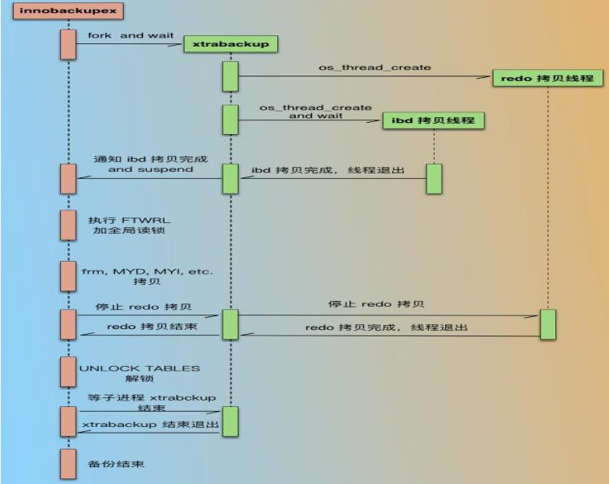
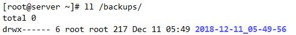

xtrabackup
Percona
[官网]<www.percona.com>
percona-server
InnoDB --> XtraDB
Xtrabackup
percona提供的mysql数据库备份工具，惟一开源的能够对innodb和xtradb数据库进行热备的工具
支持对innodb进行热备、增量备份、差量备份。
支持对myisam进行温备，因为在备份myisam表时，会对myisam表添加读锁，而且不能对myisam表进行增量备份，每次备份myisam数据都是全量，即使名义上是增量，但是实际上仍然是全量
是一种客户端工具，通过mysql协议连接mysql服务器
数据库中既有myisam表又有innodb表时，xtrabackup在备份时，会先备份inndb数据，备份完innodb数据后，再备份非innodb数据，当我们需要将备份的数据prepare时，只操作innodb数据即可，非innodb数据不用动，prepare完成后，innodb的一致性时间点与非innodb数据的一致性时间点是相同的
[手册]https://www.percona.com/doc/percona-xtrabackup/LATEST/index.html
特点：
备份还原过程快速、可靠
备份过程不会打断正在执行的事务
能够基于压缩等功能节约磁盘空间和流量
自动实现备份检验
开源，免费

安装xtrabackup
1. yum install percona-xtrabackup 在EPEL源中
2. 通过官网网站下载安装，需要解决依赖包
https://www.percona.com/downloads/XtraBackup/LATEST/
安装2.3版本之前的XtraBackup后，我们会有两个主要的备份工具：xtrabackup与innobackupex
innobackupex: Perl 脚本，它对xtrabackup这个C程序进行了封装，在备份innodb表时，此脚本会调用xtrabackup这个C程序
xtrabackup: C/C++ 编译的二进制，是专门用来备份InnoDB表的，和mysqlserver没有交互
xbcrypt 加密解密备份工具
xbstream 流传打包传输工具，类似tar
使用innobackupex进行备份，则可以备份innodb或xtradb的表，同时也能够备份myisam表
centos7默认2.4版本
xtrabackup版本升级到2.4后，相比之前的2.1有了比较大的变化：
innobackupex 功能全部集成到xtrabackup里面，只有一个binary程序，另外为了兼容考虑，innobackupex作为xtrabackup的软链接，即xtrabackup现在支持非Innodb表备份，并且 Innobackupex 在下一版本中移除，建议通过xtrabackup替换innobackupex
常用选项
xtrabackup [option] PATH
[选项说明]https://www.percona.com/doc/percona-xtrabackup/LATEST/genindex.html
--user，用户
--password，密码
--host，备份数据库地址
--databases，数据库名，如有多个数据库，彼此需要以空格隔开
--incremental，创建一个增量备份，需要指定--incremental-basedir
--increment-basedir，指定为前一次全备份或增量备份的目录
--incremental-dir：还原时增量备份的目录
--include=name，包含的表名 格式：databasename.tablename
--target-dir，指定备份的路径
备份过程：
1. 整理数据库Prepare
xtrabackup --prepare [options] BACKUP-PATH(新版本)
innobackupex --apply-log [options] BACKUP-PATH(旧版本)
--apply-log，备份完成后，无法确定备份的数据的是否包含未提交的事务或已经提交但尚未同步至数据文件的事务，此选项作用是通过回滚未提交的事务及同步已经提交的事务至数据文件使数据文件处于一致性状态
--use-memory，和--apply-log一起使用，指定整理数据库时的使用内存的大小,单位字节，也可1MB,1M,1G,1GB等
--redo-only，--apply-log-only(新版本)，此选项在prepare base full backup，往其中合并增量备份时候使用，但不包括对最后一个增量备份的合并
--export：表示开启可导出单独的表之后再导入其他Mysql
2. 复制数据库
xtrabackup --copy-back [options] --target-dir BACKUP-PATH(新版本)
innobackupex --move-back [options] BACKUP-PATH(旧版本)
--copy-back：做数据恢复时将备份数据文件拷贝到MySQL服务器的datadir
--move-back：这个选项与--copy-back相似，唯一的区别是它不拷贝文件，而是移动文件到目的地。这个选项移除backup文件，用时候必须小心。
使用场景：没有足够的磁盘空间同事保留数据文件和Backup副本
还原注意事项：
1.datadir 目录必须为空。除非指定innobackupex --force-non-emptydirectorires选项指定，否则--copy-backup选项不会覆盖
2.在restore之前,必须shutdown MySQL实例，不能将一个运行中的实例 restore到datadir目录中
3.由于文件属性会被保留，大部分情况下需要在启动实例之前将文件的属主改为mysql，这些文件将属于创建备份的用户
chown -R mysql:mysql /data/mysql
以上需要在用户调用innobackupex之前完成
--force-non-empty-directories：指定该参数时候，使得innobackupex -copy-back或--move-back选项转移文件到非空目录，已存在的文件不会被覆盖。如果--copy-back和--move-back文件需要从备份目录拷贝一个在 datadir已经存在的文件，会报错失败
生成相关文件
使用innobackupex备份时，其会调用xtrabackup备份所有的InnoDB表，复制所有关 于表结构定义的相关文件(.frm)、以及MyISAM、MERGE、CSV和ARCHIVE表的相关 文件，同时还会备份触发器和数据库配置信息相关的文件。这些文件会被保存至一个以 时间命名的目录中,在备份时，innobackupex还会在备份目录中创建如下文件：
(1)xtrabackup_info：innobackupex工具执行时的相关信息，包括版本，备份选项，备份时长，备份LSN(log sequence number日志序列号)，BINLOG的位置
(2)xtrabackup_checkpoints：备份类型（如完全或增量）、备份状态（如是否已经为 prepared状态）和LSN范围信息,每个InnoDB页(通常为16k大小)都会包含一个日志序列号LSN。LSN是整个数据库系统的系统版本号，每个页面相关的LSN能够表明此页面 最近是如何发生改变的
(3)xtrabackup_binlog_info：MySQL服务器当前正在使用的二进制日志文件及至备份 这一刻为止二进制日志事件的位置，可利用实现基于binlog的恢复
(4)backup-my.cnf：备份命令用到的配置选项信息
(5)xtrabackup_logfile：备份生成的日志文件
示例：新版xtrabackup
xtrabackup完全备份及还原
1 在原主机做完全备份到/backups
xtrabackup --backup --target-dir=/backups/
scp -rp /backups/ 目标主机:/backups
2 在目标主机上
1）预准备：确保数据一致，提交完成的事务，回滚未完成的事务
xtrabackup --prepare --target-dir=/backups/
2) 停止目标主机mysql服务，并清空数据库目录
systemctl stop mariadb
rm /var/lib/mysql/* -rf
3）复制到数据库目录 注意：数据库目录必须为空，MySQL服务不能启动
xtrabackup --copy-back --target-dir=/backups/
4）还原属性
chown -R mysql:mysql /var/lib/mysql
5）启动服务
systemctl start mariadb
xtrabackup完全，增量备份及还原
备份过程
1）完全备份：
xtrabackup --backup --target-dir=/backups/base
2）第一次修改数据
3）第一次增量备份
xtrabackup --backup --target-dir=/backups/inc1 --incrementalbasedir=/backups/base
4）第二次修改数据
5）第二次增量
xtrabackup --backup --target-dir=/backups/inc2 --incrementalbasedir=/backups/inc1
6）备份过程目标主机生成三个备份目录 /backups/{base，inc1，inc2}
scp -rp /backups/ 目标主机:/backups/
还原过程 ：在目标主机
1）预准备完成备份，此选项--apply-log-only 阻止回滚未完成的事务
xtrabackup --prepare --apply-log-only --target-dir=/backups/base
2）合并第1次增量备份到完全备份，
xtrabackup --prepare --apply-log-only --target-dir=/backups/base --incremental-dir=/backups/inc1
3）合并第2次增量备份到完全备份：最后一次还原不需要加选项--apply-log-only
xtrabackup --prepare --target-dir=/backups/base --incremental-dir=/backups/inc2
4）复制到数据库目录，注意数据库目录必须为空，MySQL服务不能启动
xtrabackup --copy-back --target-dir=/backups/base
5）还原属性：
chown -R mysql:mysql /var/lib/mysql
6）启动服务：
systemctl start mariadb
旧版xtrabackup
xtrabackup完全备份及还原
1 在原主机
innobackupex /backups
scp -rp /backups/ 目标主机:/backups
2 在目标主机

1）整理数据
innobackupex --apply-log /backups/2018-02-23_11-55-57
2）停止MySQL服务，并清空MySQL数据目录
systemctl stop mariadb
rm -rf /var/lib/mysql/*
3）复制数据库目录
innobackupex --copy-back /backups/2018-02-23_11-55-57
4）更改属性，并重启服务
chown -R mysql.mysql /var/lib/mysql/
systemctl start mariadb
xtrabackup完全，增量备份及还原
备份过程
1 在原主机
innobackupex /backups
mkdir /backups/inc{1,2}
修改数据库内容
innobackupex --incremental /backups/inc1 --incremental-basedir=/backups/2018-02-23_11-55-57（完全备份生成的路径）
再次修改数据库内容后执行
innobackupex --incremental /backups/inc2 --incremental-basedir=/backups/inc1/2018-12-11_06-02-51/（上次增量备份生成的路径）
拷贝到目标主机
scp -rp /backups/ 目标主机:/backups
还原过程
2 在目标主机 不启动mariadb
rm -rf /var/lib/mysql/*
预准备完成备份
innobackupex --apply-log --redo-only /data/2018-02-23_14-21-42/
合并第1次增量备份到完全备份
innobackupex --apply-log --redo-only /data/2018-02-23_14-21-42/ --incremental-dir=/data/inc1/2018-02-23_14-26-17
合并第2次增量备份到完全备份
innobackupex --apply-log /data/2018-02-23_14-21-42/ --incrementaldir=/data/inc2/2018-02-23_14-28-29/
复制到数据库目录，注意数据库目录必须为空，MySQL服务不能启动
innobackupex --copy-back /data/2018-02-23_14-21-42/
更改属性
chown -R mysql.mysql /var/lib/mysql/
systemctl start mariadb